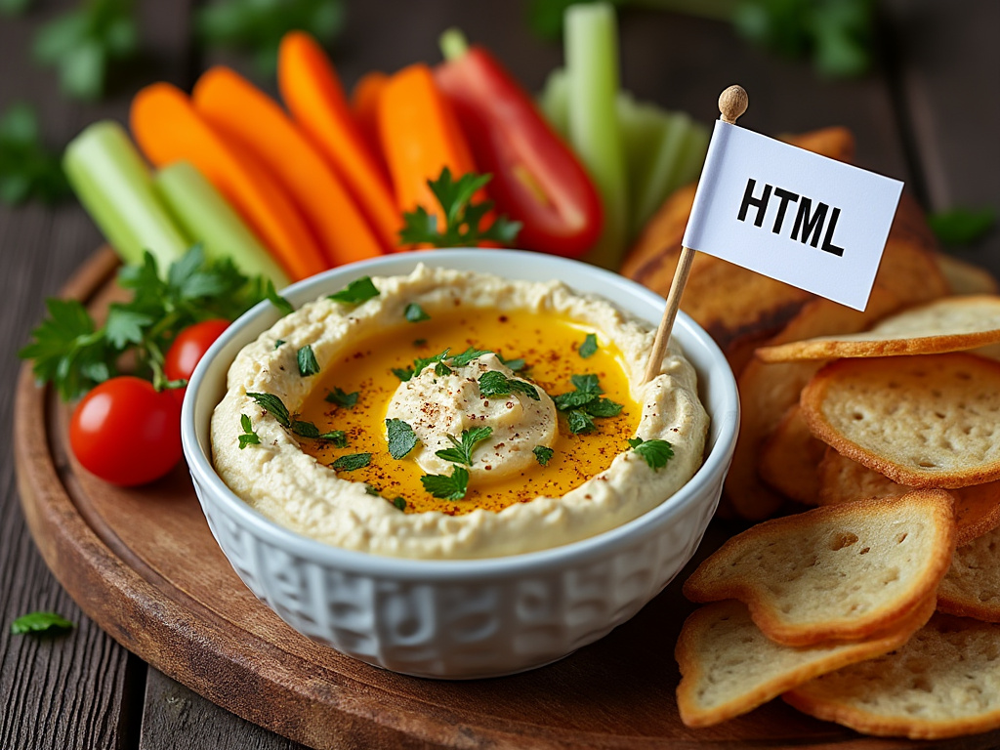

< Back
HTML Hummus Dip

Description
This dip is as versatile and fundamental as HTML itself.
It's quick to make and can be served with various "elements" like
pita bread or veggie sticks, symbolizing the different tags in HTML
Ingredients
- Chickpeas (Garbanzo Beans) - The <body> of the dip, providing structure.
- Tahini - The <script> element, adding that essential, rich flavor.
- Lemon Juice - Like the <style> tag for CSS, it brings zest and balance to the dish.
- Garlic - The <head> of the dip, not always visible but crucial for flavor.
- Olive Oil - Represents the <link> to external resources, adding smoothness.
- Salt - The <title> of our recipe, essential for taste, even if it's in the background.
- Water - Adjusts the consistency, akin to adjusting the <meta> tags for various purposes.
- Cumin (optional) - For those who like a bit of <meta charset="UTF-8">, it adds a unique flavor profile.
- Paprika or Sumac (for garnish) - Like an <img> alt attribute, it adds a visual touch without being necessary for the core functionality.
Steps
- Open the Document
- Drain and rinse a can of chickpeas. This is your <body> content, the main structure of our dish.
- Add the Base Flavor
In a blender or food processor, combine the chickpeas with:
- 1/4 cup of tahini (your <script> for functionality),
- Juice of 1 lemon (for <style> and zest),
- 1 to 2 cloves of garlic (the <head> of flavor).
- Blend it Together
- Start blending while adding 2-3 tablespoons of olive oil slowly (<link>ing the elements together).
- If it's too thick, add water, bit by bit, until you get a smooth, creamy consistency.
- Season to Taste
- Add salt to taste (our <title>, giving the dish its identity).
- Optional: A pinch of cumin for that <meta charset="UTF-8"> hint of uniqueness.
- Adjust and Blend
- AIf the texture isn't right, adjust with more water for thinner or more chickpeas for thicker dip.
Blend until you have a smooth dip, like ensuring your HTML validates.
- Garnish
- Transfer to a serving bowl. Drizzle with olive oil and sprinkle with
paprika or sumac for color (<img> alt attributes for visual appeal).
- Serve
- Serve with pita bread, which you can cut into triangles,
or with an assortment of vegetables (<div>s and <ul>s for dipping).
- Enjoy
- Dip, eat, and enjoy your creation. Remember, like debugging in HTML,
if something's not quite right, tweak it (or add more lemon, garlic, etc.).
< Back